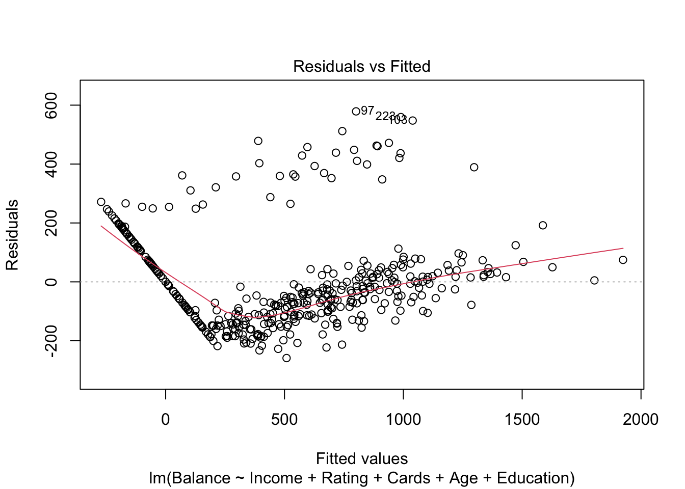
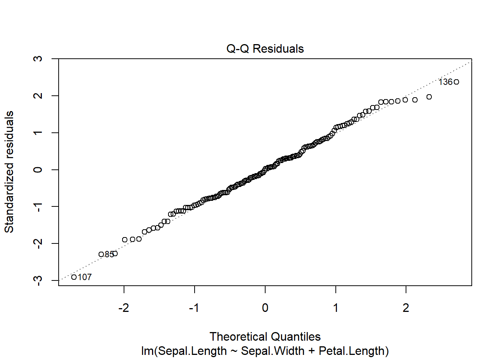
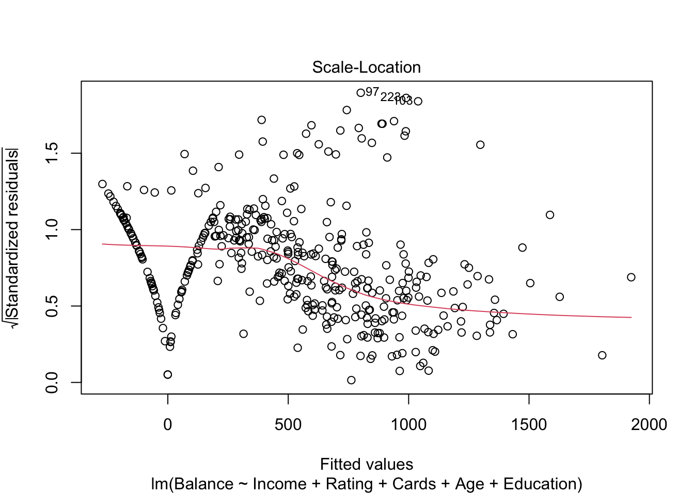
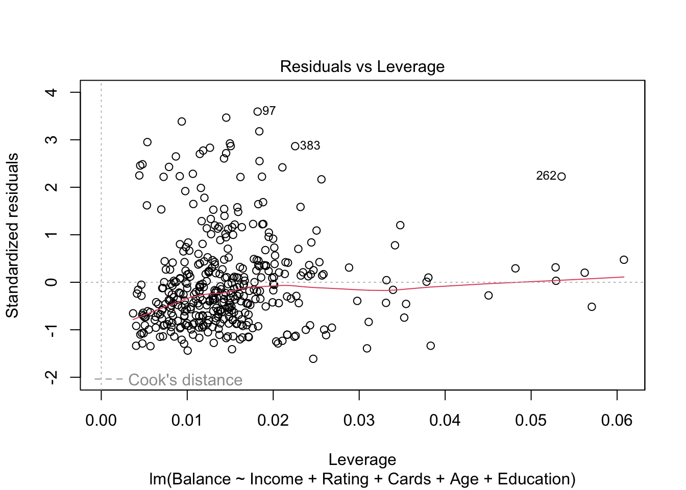

# Setup para o relatório Quarto
knitr::opts_chunk$set(echo = TRUE, message = FALSE, warning = FALSE)Crédito e Suas Relações
1 Introdução
Este relatório tem por objetivo ajustar um modelo de regressão linear múltiplo com o intuito de investigar a influência de determinadas características (medidas) associadas a características de pessoas a característica gasto médio em crédito (“balance”).
Neste contexto a regressão será realizada sobre a base de dados Credit, introduzida no livro James (2013), que contém características relacionadas a pessoas que possuem crédito em contas de banco, por exemplo: renda, limite de crédito, nível de educação e idade.
2 Os dados
É possível baixar os dados do UCI Machine Learning Repository – Iris Data Set, mas a biblioteca ISLR do R já os contém. Apenas carregando a biblioteca, um data frame chamado credit fica disponibilizado e poderá ser usado imediatamente. Vejamos em seguida.
library(dplyr)
library(ISLR)
glimpse(Credit) Rows: 400
Columns: 12
$ ID <int> 1, 2, 3, 4, 5, 6, 7, 8, 9, 10, 11, 12, 13, 14, 15, 16, 17, 1…
$ Income <dbl> 14.891, 106.025, 104.593, 148.924, 55.882, 80.180, 20.996, 7…
$ Limit <int> 3606, 6645, 7075, 9504, 4897, 8047, 3388, 7114, 3300, 6819, …
$ Rating <int> 283, 483, 514, 681, 357, 569, 259, 512, 266, 491, 589, 138, …
$ Cards <int> 2, 3, 4, 3, 2, 4, 2, 2, 5, 3, 4, 3, 1, 1, 2, 3, 3, 3, 1, 2, …
$ Age <int> 34, 82, 71, 36, 68, 77, 37, 87, 66, 41, 30, 64, 57, 49, 75, …
$ Education <int> 11, 15, 11, 11, 16, 10, 12, 9, 13, 19, 14, 16, 7, 9, 13, 15,…
$ Gender <fct> Male, Female, Male, Female, Male, Male, Female, Male, F…
$ Student <fct> No, Yes, No, No, No, No, No, No, No, Yes, No, No, No, No, No…
$ Married <fct> Yes, Yes, No, No, Yes, No, No, No, No, Yes, Yes, No, Yes, Ye…
$ Ethnicity <fct> Caucasian, Asian, Asian, Asian, Caucasian, Caucasian, Africa…
$ Balance <int> 333, 903, 580, 964, 331, 1151, 203, 872, 279, 1350, 1407, 0,…Visualizando rapidamente a estrutura da base de dados, observamos as seguintes variáveis:
Var.Name: some description;Credit.Income: Quantitativa Continua, Salário do usuário em milhares de dolares;Credit.Limit: Quantitativa Discreta, Llimite do cartão de crédito do usuário;Credit.Rating: Quantitativa Discreta, Nível de crédito do usuário;Credit.Cards: Quantitativa Discreta, Número de cartões de crédito;Credit.Age: Quantitativa Discreta, Idade do usuário;Credit.Education: Quantitativa Ordinal, Nível de educação do usuário em anos;Credit.Student: Qualitativa Nominal, Se o usuário foi ou não um estudante;Credit.Married: Qualitativa Nominal, Se o usuário já se casou;Credit.Ethnicity: Qualitativa Nominal, Indicador da etnia autointitulada pelo usuário;Credit.Balance: Variavel resposta de estudo, Qual o gasto médio do cartão de crédito do usuário;
2.1 Análise exploratória dos dados
library(skimr)
dados <- Credit
skim(dados)| Name | dados |
| Number of rows | 400 |
| Number of columns | 12 |
| _______________________ | |
| Column type frequency: | |
| factor | 4 |
| numeric | 8 |
| ________________________ | |
| Group variables | None |
Variable type: factor
| skim_variable | n_missing | complete_rate | ordered | n_unique | top_counts |
|---|---|---|---|---|---|
| Gender | 0 | 1 | FALSE | 2 | Fem: 207, Ma: 193 |
| Student | 0 | 1 | FALSE | 2 | No: 360, Yes: 40 |
| Married | 0 | 1 | FALSE | 2 | Yes: 245, No: 155 |
| Ethnicity | 0 | 1 | FALSE | 3 | Cau: 199, Asi: 102, Afr: 99 |
Variable type: numeric
| skim_variable | n_missing | complete_rate | mean | sd | p0 | p25 | p50 | p75 | p100 | hist |
|---|---|---|---|---|---|---|---|---|---|---|
| ID | 0 | 1 | 200.50 | 115.61 | 1.00 | 100.75 | 200.50 | 300.25 | 400.00 | ▇▇▇▇▇ |
| Income | 0 | 1 | 45.22 | 35.24 | 10.35 | 21.01 | 33.12 | 57.47 | 186.63 | ▇▂▁▁▁ |
| Limit | 0 | 1 | 4735.60 | 2308.20 | 855.00 | 3088.00 | 4622.50 | 5872.75 | 13913.00 | ▆▇▃▁▁ |
| Rating | 0 | 1 | 354.94 | 154.72 | 93.00 | 247.25 | 344.00 | 437.25 | 982.00 | ▆▇▃▁▁ |
| Cards | 0 | 1 | 2.96 | 1.37 | 1.00 | 2.00 | 3.00 | 4.00 | 9.00 | ▇▇▂▁▁ |
| Age | 0 | 1 | 55.67 | 17.25 | 23.00 | 41.75 | 56.00 | 70.00 | 98.00 | ▆▇▇▇▁ |
| Education | 0 | 1 | 13.45 | 3.13 | 5.00 | 11.00 | 14.00 | 16.00 | 20.00 | ▂▅▇▇▂ |
| Balance | 0 | 1 | 520.02 | 459.76 | 0.00 | 68.75 | 459.50 | 863.00 | 1999.00 | ▇▅▃▂▁ |
dadosNum <- select(dados, -c(ID, Gender, Student, Married, Ethnicity))
dadosNum <- dadosNum %>%
select(Balance, everything())2.1.1 Comentários:
….
2.1.2 Análise de correlação
library(GGally)
graf1 <- ggpairs(dadosNum, columns = 1:ncol(dadosNum))
graf1
library(ggplot2)
ggsave("Grafico_dispersao_iris.jpeg")2.1.2.1 Comentários
É possível observar que:
- A variável dependente
Balance:
não apresenta correlação linear significante com a variável
Age(r= 0.002, 0.1 < p < 1);não apresenta correlação linear significante com a variável
Education(r= -0.008, 0.1 < p < 1);apresenta correlação linear baixa com a variável
Cards(r= 0.086, 0.05 < p < 0.1);apresenta correlação linear significante com a variável
Income(r= 0.464, 0 < p < 0.001);apresenta correlação linear significante com a variável
Limit(r= 0.862, 0 < p < 0.001);apresenta correlação linear significante com a variável
Rating(r= 0.864, 0 < p < 0.001);
- A variável independente
Income:
- apresenta correlação linear significativa com a variável independente
Limit(r=-0.792, p < 0).
Como esta correlação, em valor absoluto é praticamente 0.8, ou seja pode haver indício para um posterior problema de multicolinearidade.
- apresenta correlação linear significativa com a variável independente
Rating(r=-0.791, p < 0).
Como esta correlação, em valor absoluto é praticamente 0.8, ou seja pode haver indício para um posterior problema de multicolinearidade.
- apresenta correlação linear significativa com a variável independente
Age(r=0.175, p< 0)
Como esta correlação, em valor absoluto não é superior a 0.9 (ou 0.8) não há indício para um posterior problema de multicolinearidade.
- A variável independente
Limit:
- apresenta correlação linear significativa com a variável independente
Rating(r=0.997, p < 0).
Como esta correlação, em valor absoluto é superior a 0.9 há indício para um posterior problema de multicolinearidade. Observa-se, ainda, que tal correlação é do tipo forte e positiva, ou seja, as medidas associadas se relacionam de forma fortemente positiva.
- apresenta correlação linear significativa com a variável independente
Age(r=0.101, p< 0.01)
Como esta correlação, em valor absoluto não é superior a 0.9 (ou 0.8) não há indício para um posterior problema de multicolinearidade.
- A variável independente
Rating:
- apresenta correlação linear significativa com a variável independente
Age(r=0.103, p< 0.01)
Como esta correlação, em valor absoluto não é superior a 0.9 (ou 0.8) não há indício para um posterior problema de multicolinearidade.
2.1.2.2 Multicolinearidade - Analisando o VIF - Variance Inflation Factor
library(car)
modelo1 <- lm(Balance ~ ., data = dadosNum)
vif(modelo1) Income Limit Rating Cards Age Education
2.773276 228.848290 230.612596 1.433932 1.038541 1.008043 Como podemos ver, são as variáveis Limit e Rating apresentam vif maior que 10 e são exatamente elas que também apresentaram forte correlação positiva.
3 Ajuste do modelo 1
summary(modelo1)
Call:
lm(formula = Balance ~ ., data = dadosNum)
Residuals:
Min 1Q Median 3Q Max
-227.25 -113.15 -42.06 45.82 542.97
Coefficients:
Estimate Std. Error t value Pr(>|t|)
(Intercept) -477.95809 55.06529 -8.680 < 2e-16 ***
Income -7.55804 0.38237 -19.766 < 2e-16 ***
Limit 0.12585 0.05304 2.373 0.01813 *
Rating 2.06310 0.79426 2.598 0.00974 **
Cards 11.59156 7.06670 1.640 0.10174
Age -0.89240 0.47808 -1.867 0.06270 .
Education 1.99828 2.59979 0.769 0.44257
---
Signif. codes: 0 '***' 0.001 '**' 0.01 '*' 0.05 '.' 0.1 ' ' 1
Residual standard error: 161.6 on 393 degrees of freedom
Multiple R-squared: 0.8782, Adjusted R-squared: 0.8764
F-statistic: 472.5 on 6 and 393 DF, p-value: < 2.2e-16
Ao observar o ajuste do primeiro modelo com o intuito de prever o Gasto médio em crédito (Balance), tem-se que as variáveis Income, Limit, Rating e Age explicam de forma estatísticamente significativa e com um bom ajuste indicado pelo Coeficiente de determinação ajustado (Adjusted R-squared: 0.8764). Entretanto, dois resultados nos chamam a atenção, quais sejam:
O erro padrão da variável
Cardsé extremamente maior que os erros padrões das demais variáveis preditoras;O erro padrão da variável
Educationé significativamente maior que os erros padrões das demais variáveis preditoras;A variável
Incomeapresenta efeito negativo aoBalance, talvez pelo fato de que se há um alto saldo entrando na conta do usuário, não há necessidade de se usar o crédito disponível.A variável
Ageapresenta efeito negativo aoBalance, logo quanto maior a idade, menor ogasto médio em crédito.
Resumindo, diante das análises prévias e constatações a partir dos resultados do modelo, identificamos que existe o problema de multicolinearidade de modo que as variáveis preditoras Limit e Rating não conseguem explicar a variável resposta Balance de forma uníssona, pois as mesmas compartilham da mesma informação muito fortemente de modo que elas competem para juntas explicarem/predizerem a variável resposta Balance, compromentendo assim, a confiabilidade dos coeficientes estimados e dos valores p.
3.1 Existe multicolinearidade, e agora?
Na presente análise, seguiremos ajustando dois modelos excluindo do modelo inicial e completo 1, cada uma das variáveis explicativas em separado (Limit e Rating), mantendo a outra no modelo inicial. Vejamos:
3.2 Modelo sem Limit (modelo2)
modelo2 <- update(modelo1, ~ . -Limit)
summary(modelo2)
Call:
lm(formula = Balance ~ Income + Rating + Cards + Age + Education,
data = dadosNum)
Residuals:
Min 1Q Median 3Q Max
-258.70 -113.51 -36.34 57.84 578.85
Coefficients:
Estimate Std. Error t value Pr(>|t|)
(Intercept) -525.91825 51.52197 -10.208 <2e-16 ***
Income -7.54314 0.38456 -19.615 <2e-16 ***
Rating 3.93664 0.08677 45.367 <2e-16 ***
Cards 2.56418 5.99015 0.428 0.6688
Age -0.90190 0.48087 -1.876 0.0615 .
Education 2.40719 2.60927 0.923 0.3568
---
Signif. codes: 0 '***' 0.001 '**' 0.01 '*' 0.05 '.' 0.1 ' ' 1
Residual standard error: 162.6 on 394 degrees of freedom
Multiple R-squared: 0.8765, Adjusted R-squared: 0.8749
F-statistic: 559.3 on 5 and 394 DF, p-value: < 2.2e-16Observa-se que; para este modelo ajustado; As variáveis independentes
Income,RatingeAgesão estatísticamente significativas com a adequação de ajuste do modelo aos dados igual a 87,5% (Adjusted R-squared: 0.8749).
3.2.1 Vif para o modelo
vif(modelo2) Income Rating Cards Age Education
2.772528 2.720585 1.018348 1.038468 1.003614 Podemos ver que não há problema de correlação linear entre as variáveis independentes, visto que o vif deu abaixo de 10.
3.3 Modelo sem Rating (modelo3)
modelo3 <- update(modelo1, ~ . -Rating)
summary(modelo3)
Call:
lm(formula = Balance ~ Income + Limit + Cards + Age + Education,
data = dadosNum)
Residuals:
Min 1Q Median 3Q Max
-234.74 -114.91 -39.11 38.60 528.04
Coefficients:
Estimate Std. Error t value Pr(>|t|)
(Intercept) -4.210e+02 5.088e+01 -8.275 2.01e-15 ***
Income -7.489e+00 3.842e-01 -19.491 < 2e-16 ***
Limit 2.628e-01 5.802e-03 45.291 < 2e-16 ***
Cards 2.161e+01 5.966e+00 3.622 0.000331 ***
Age -8.908e-01 4.816e-01 -1.850 0.065089 .
Education 1.548e+00 2.613e+00 0.593 0.553855
---
Signif. codes: 0 '***' 0.001 '**' 0.01 '*' 0.05 '.' 0.1 ' ' 1
Residual standard error: 162.8 on 394 degrees of freedom
Multiple R-squared: 0.8762, Adjusted R-squared: 0.8746
F-statistic: 557.5 on 5 and 394 DF, p-value: < 2.2e-16Para este modelo e de maneira análoga ao modelo anterior; As variáveis independentes
Income,Limit,CardseAgesão estatísticamente significativas. Com a adequação de ajuste do modelo aos dados igual a 87,5% (Adjusted R-squared: 0.8746), praticamente o mesmo do anterior, porém com mais variáveis explicativas.
3.3.1 Vif para o modelo
vif(modelo2) Income Rating Cards Age Education
2.772528 2.720585 1.018348 1.038468 1.003614 Podemos ver que não há problema de correlação linear entre as variáveis independentes, visto que o vif deu abaixo de 10.
4 Métodos de seleção de modelos
4.1 Medida AIC
AIC(modelo2)[1] 5216.103AIC(modelo3)[1] 5217.222Comparando-se os dois modelos com a exclusão; em separado; das duas variáveis que apresentam multicolinearidade; observa-se que o modelo com o menor valor de AIC é o modelo 2. Mas, como regra prática, não observa-se uma diferença entre os valores superior a 10 para que haja um indício significativo de real diferença, então podemos escolher o modelo 2 ou o 3.
4.2 Medida BIC
BIC(modelo2)[1] 5244.043BIC(modelo3)[1] 5245.162De maneira análoga à interpretação da medida AIC, interpreta-se a medida BIC e; conforme pode ser visto; o modelo com o menor valor de BIC é o modelo 2. Mas, como regra prática, não observa-se uma diferença entre os valores superior a 10 para que haja um indício significativo de real diferença, então podemos escolher o modelo 2 ou o 3.
4.3 Comparação de modelos encaixados (ANOVA)
anova(modelo2, modelo1)Analysis of Variance Table
Model 1: Balance ~ Income + Rating + Cards + Age + Education
Model 2: Balance ~ Income + Limit + Rating + Cards + Age + Education
Res.Df RSS Df Sum of Sq F Pr(>F)
1 394 10415906
2 393 10268781 1 147125 5.6307 0.01813 *
---
Signif. codes: 0 '***' 0.001 '**' 0.01 '*' 0.05 '.' 0.1 ' ' 1Observa-se pelo teste F que deve-se rejeitar a hipótese nula de que o modelo completo (com a variável
Limitinclusa) explica tão bem quanto o sub-modelo sem a variávelLimit(p < 0,05). Em outras palavras, esta variável é estatísticamente significante para a regressão (ainda que haja problema de multicolinearidade quando na presença da variávelRating).
anova(modelo3, modelo1)Analysis of Variance Table
Model 1: Balance ~ Income + Limit + Cards + Age + Education
Model 2: Balance ~ Income + Limit + Rating + Cards + Age + Education
Res.Df RSS Df Sum of Sq F Pr(>F)
1 394 10445079
2 393 10268781 1 176298 6.7472 0.009742 **
---
Signif. codes: 0 '***' 0.001 '**' 0.01 '*' 0.05 '.' 0.1 ' ' 1Ao realizar a ANOVA para verificar a significância da variável
Ratingpara regressão, observa-se resultado ainda mais significativo do que da variávelLimit; ou seja; a variávelRatingé mais estatísticamente significante para a regressão (ainda que haja problema de multicolinearidade quando na presença da variávelLimit).
5 Modelo selecionado (modelo2)
Diante das análises realizadas até o momento e tendo como objetivos não apenas realizar previsões mas também interpretar de forma prática a relação entre as variáveis; o modelo a ser adotado e a ser verificado o atendimento dos pressuposto de um MRLM é o modelo 2. Vejamos:
plot(modelo2)



5.1 Análises dos pressupostos e Comentários
Análises análogas à Regressão Linear Simples.
…
6 Interpretações do modelo selecionado
Uma maneira automatizada para se relatar os resultados de um modelo é utilizando a função report do pacote de mesmo nome.
No relatório a ser entregue, o texto deve estar traduzido e interpretado também em termos práticos, de acordo com os objetivos do problema em estudo.
#library(report)
#report(modelo2)6.1 Coeficientes padronizados
Para efeito de comparação dos coeficientes associados a cada variável preditora e observação da importância ou peso das mesmas para uma predição, torna-se necessário obter os coeficientes padronizados principalmente quando as unidades de medida das variáveis admitem magnitudes de valores bem distindos, por exemplo, uma característica medida em centímetros e outra em metros. Veja como obtê-los sobre o modelo selecionado (o modelo2).
# Função lm.beta() do pacote lm.beta
#lm.beta::lm.beta(modelo2)7 Previsões
Para realizar previsões sobre valores para a variável resposta, recomenda-se o uso de valores para as variáveis explicativas dentro dos respectivos intervalos observados. Daí a importância de um breve resumo sobre os dados observados:
summary(dadosNum) Balance Income Limit Rating
Min. : 0.00 Min. : 10.35 Min. : 855 Min. : 93.0
1st Qu.: 68.75 1st Qu.: 21.01 1st Qu.: 3088 1st Qu.:247.2
Median : 459.50 Median : 33.12 Median : 4622 Median :344.0
Mean : 520.01 Mean : 45.22 Mean : 4736 Mean :354.9
3rd Qu.: 863.00 3rd Qu.: 57.47 3rd Qu.: 5873 3rd Qu.:437.2
Max. :1999.00 Max. :186.63 Max. :13913 Max. :982.0
Cards Age Education
Min. :1.000 Min. :23.00 Min. : 5.00
1st Qu.:2.000 1st Qu.:41.75 1st Qu.:11.00
Median :3.000 Median :56.00 Median :14.00
Mean :2.958 Mean :55.67 Mean :13.45
3rd Qu.:4.000 3rd Qu.:70.00 3rd Qu.:16.00
Max. :9.000 Max. :98.00 Max. :20.00 Agora, suponha que temos por objetivo prever os valores de Balance considerando os seguintes valores para as variáveis explicativas:
novas.preditoras <- data.frame(Balance=c(450.0, 500.0, 550.0), Income=c(40.0, 45.0, 50.0), Rating=c(300.0, 350.0, 400.0), Cards=c(2.5, 3.0, 3.5), Age=c(50.0, 55.0, 60.0), Education=c(12.0, 13.0, 14.0))Observação:
O data.frame novas.preditoras com os novos valores das variáveis preditoras deve ser construído com os mesmos nomes das variáveis preditoras utilizadas no objeto que contém o modelo ajustado.
7.1 Intervalo de Confiança
Um intervalo de confiança captura a incerteza em torno dos valores médios (valores esperados) preditos.
predict(modelo2, novas.preditoras,
interval = "confidence") fit lwr upr
1 343.5506 323.3500 363.7513
2 501.8468 485.6609 518.0327
3 660.1430 641.6598 678.62627.2 Intervalo de Predição/Previsão
Um intervalo de predição captura a incerteza em torno de um único valor não observado na base de dados e não em torno do seu valor médio/esperado o qual é obtido pelas variáveis preditoras observadas na base de dados.
predict(modelo2, novas.preditoras,
interval = "prediction") fit lwr upr
1 343.5506 23.25569 663.8456
2 501.8468 181.77999 821.9137
3 660.1430 339.95178 980.3342
7.3 Observações
- Um intervalo de predição/previsão sempre será mais amplo do que um intervalo de confiança para os mesmos valores das variáveis independentes.
- Você deve usar um intervalo de previsão/predição quando estiver interessado em previsões individuais específicas, porque um intervalo de confiança produzirá um intervalo de valores muito estreito, resultando em uma chance maior de que o intervalo não contenha o valor verdadeiro.
- Sugere-se a leitura do seguinte Guia sobre previsões de valores:
https://www.statology.org/prediction-interval-r/
8 Regressão com variáveis Qualitativas (Dummies/Fictícias/Indicadoras)
A seguir realizamos uma breve análise exploratória através de visualizações gráficas da variável resposta Sepal.Length segundo a variável categórica Species.
8.1 Sepal.Length versus Species
8.1.1 Visualizações gráficas
#g1 <- ggplot(dados, aes(x=Species, y=Sepal.Length)) +
# geom_boxplot(fill="blue", alpha=0.4) +
# theme_classic()
#g1#g1 + geom_jitter()#g2 <- ggplot(dados, aes(x=Species, y=Sepal.Length)) +
# geom_violin(fill="blue", alpha=0.4) +
# theme_classic()
#g2#g3 <- ggplot(dados, aes(x=Sepal.Length, fill=Species)) +
# geom_density(stat = "density", alpha=0.6) +
# theme_classic()
#g3
Interpretações:
…
8.2 Sobre os “levels” da variável Species
- A maioria dos modelos estatísticos, assim como é o caso da regressão linear, foram desenvolvidos para lidar nativamente com variáveis quantitativas;
- Desta forma, naturalmente variáveis categóricas não se encaixam em tais modelos;
- É neste contexto que as variáveis dummies/fictícias/indicadoras são importantes;
- A ideia das variáveis dummies é transformar variáveis categóricas em variáveis quantitativas, de forma que elas possam ser incorporadas em modelos estatísticos.
Veremos este tema agora conhecendo os níveis da variável categórica Species.
#levels(dados$Species) # está em ordem alfabética
Observa-se que as categorias encontram-se em ordem alfabética e como a categoria setosa é a que ocupa a primeira posição do vetor de categorias; segue que esta é a categoria de referência. Desta forma,
A variável
Speciesque tem 3 categorias é substuída por um vetor de 2 variáveis (2 colunas na base de dados) do tipo variáveis Dummies, Fictícias ou Indicadoras: \((Z_1, Z_2)=(z_1, z_2)\) codificadas como:
- \(Z_1 \quad\): igual a 1 se a espécie é versicolor e 0; caso contrário; => \((Z_1, Z_2)=(1, 0)\);
- \(Z_2 \quad\): igual a 1 se a espécie é virginica => \((Z_1, Z_2)=(0, 1)\);
- No caso em que ocorre simultaneamente \(Z_1=0\) e \(Z_2=0\); então tem-se a observação de uma espécie do tipo setosa => \((Z_1, Z_2)=(0, 0)\)
Por exemplo, observando uma amostra da base de dados abaixo, tem-se que:
As observações da base de dados de número 68, 51 e 85; dentre outras em situações análogas; serão usadas no MRLM após substituir a coluna
Species=“versicolor” por duas outras colunas em que na coluna de \(Z_1\) constará o valor 1 e na coluna \(Z_2\) constará o valor 0; ou seja;
=> \((Z_1, Z_2)=(1, 0)\) para todas as observações em que Species=“versicolor”
Já a observação de número 129 da base de dados será usada no MRLM após substituir a coluna
Species=“virginica” por duas outras colunas em que na coluna de \(Z_1\) constará o valor 0 e na coluna \(Z_2\) constará o valor 1; ou seja;
=> \((Z_1, Z_2)=(0, 1)\) para todas as observações em que Species=“virginica”
Com relação às observações da base de dados de número 43 e 14; dentre outras em situações análogas; serão usadas no MRLM após substituir a coluna
Species=“setosa” por duas outras colunas em que na coluna de \(Z_1\) constará o valor 0 e na coluna \(Z_2\) constará o valor 0 também; ou seja;
=> \((Z_1, Z_2)=(0, 0)\) para todas as observações em que Species=“setosa”
#set.seed(1)
# Uma amostra da base de dados para exemplo
#df.original <- head(dados[sample(1:150, 150),])
# Data frame com a variável categórica
#df.original
# Obtém as 3 colunas dummies sem a coluna do intecepto (-1)
#dummies <- model.matrix(~ Species -1, data = df.original)
# Exclui a primeira dummie para não haver colinearidade
#dummies <- dummies[,-1]
# Se desejar excluir a variável categórica original
#df.original <- df.original %>% select(-Species)
#df.com.dummies <- cbind.data.frame(df.original, dummies)
# Data frame com a variável categórica original e as dummies sem a categoria de referência para não haver colinearidade
#df.com.dummiesOu seja, usando a notação Z1 e Z2:
#names(df.com.dummies)[c(6,7)] <- c("Z1","Z2")
#df.com.dummiesResumindo, no ajuste do MRLM a coluna Species é substituida pelas colunas \(Z_1\) e \(Z_2\).
Na comunidade dos cientista de dados, este procedimento de criar variáveis dummies para lidar com variáveis predidoras do tipo categórica é conhecido por “one-hot encoding”.
8.3 MRLM ajustado com a variável Species
O modelo a ser ajustado é da forma:
\(y_i = \beta_0 + \beta_1 (Sepal.Width) + \beta_2 z_{i1} + \beta_3 z_{i2} + \varepsilon_i=\)
\(= \left\{\begin{align*}\beta_0 + \beta_1 . (Sepal.Width) + \varepsilon_i\ ,& \mbox{ se a } i-\mbox{ésima iris é da espécie “setosa”} \\ & \\ \beta_0 + \beta_2 + \beta_1 . (Sepal.Width) + \varepsilon_i \ ,& \mbox{ se a } i-\mbox{ésima iris é da espécie “versicolor”} \\ & \\ \beta_0 + \beta_3 + \beta_1 . (Sepal.Width) + \varepsilon_i \ ,& \mbox{ se a } i-\mbox{ésima iris é da espécie “virginica”} \end{align*}\right.\)
Assim,
O coeficiente \(\beta_0\) pode ser interpretado como o comprimento médio da sépala entre as íris da espécie “setosa”;
\(\beta_0 + \beta_2 \quad\) como o comprimento médio da sépala entre as íris da espécie “versicolor”; e
\(\beta_0 + \beta_3 \quad\) como o comprimento médio da sépala entre as íris da espécie “virginica”.
Segue que,
O coeficiente \(\beta_2\) é a diferença média do comprimento da sépala entre as espécies “versicolor” e “setosa”; e
\(\beta_3 \quad\) é a diferença média do comprimento da sépala entre as espécies “virginica” e “setosa”.
De forma simplificada:
\(\beta_0 \quad\) é o comprimento médio da sépala das íris da espécie “setosa”;
\(\beta_2 \quad\) é o acréscimo/decréscimo médio no comprimento da sépala ocasionanado por uma íris ser da espécie “versicolor” sobre o comprimento médio da íris “setosa”;
\(\beta_3 \quad\) é o acréscimo/decréscimo médio no comprimento da sépala ocasionanado por uma íris ser da espécie “virginica” sobre o comprimento médio da íris “setosa”;
O modelo ajusatado fica:
#modelo4 <- lm(Sepal.Length ~ Sepal.Width + Petal.Length + Species, data=dados)
#summary(modelo4)8.3.1 Interpretações
A partir dos resultados apresentados acima, chega-se a interpretações estranhas com relação aos coeficientes estimados da varável Species; talvez devido a variável Petal.Length estar bem associada com a variável Species (Ver as análises exploratórias na Seção 2.1.2 (Gráficos de densidade do GGally)).
8.4 Modelo ajustado sem o Petal.Length
Aqui ajustamos um modelo sem a variável Petal.Length por parecer estar bem associado com a variável Species. Vejamos:
#modelo5 <- lm(Sepal.Length ~ Sepal.Width + Species, data=dados)
#summary(modelo5)8.4.1 Interpretações
Este último modelo ajustado apresenta interpretações práticas adequadas e mais realísticas porém apresenta um Adjusted R-squared: 0.7203 inferior ao do modelo 2, anteriormente selecionado e apresentado na Seção 3.2. Lá observa-se um Adjusted R-squared: 0.838.
8.5 Alterando a Categoria de Referência
Em algumas situações pode ser necessário alterar a categoria de referência da variável qualitativa/categórica para; por exemplo; se obter uma melhor interpretação prática do modelo ajustado. Para resolver esta questão, uma das duas seguintes funções do R; por exemplo; podem ser utilizadas:
relevel: do pacote nativostatsdo R, que coloca a categoria de interesse como sendo a primeira, ou seja, a de referência;
fct_relevel: a qual é uma função do pacoteforcatsque generaliza astats::relevel
Vejamos alguns exemplos.
# Verifica os levels originais:
#levels(dados$Species)Os
levelsestão em ordem alfabética e por isso “setosa” é a primeira e; assim; ela fica sendo a categoria de referência.
8.5.1 “virginica” como categoria de referência
Se desejarmos que “virginica” seja a categoria de referência, usando a função `relevel`` deve-se fazer:
#dados$Species <- relevel(dados$Species, "virginica")
# Verifica nova categoria de referência
#levels(dados$Species)
Ajustando o modelo em função desta nova categoria de referência nada muda em termos de valores preditos mas apenas os valores e consequente interpretações dos coeficientes, vejamos:
# Modelo igual ao 5 com categoria de referência sendo
# "virginica"
#modelo6 <- lm(Sepal.Length ~ Sepal.Width + Species, data=dados)
#summary(modelo6)Comentários/Observações
Perceba que pelas análises exploratórias, observou-se evidência de que os maiores comprimentos de sépalas (Sepal.Length) acontecem com maior frequência entre a espécie “virginica”, seguido por comprimentos medianos entre a espécie “versicolor” e os menores comprimentos sendo mais frequentes entre a espécie “setosa” e é o que se observa quanto aos coeficientes estimados no modelo ajustado acima. Veja:
- O coeficiente estimado para a categoria “setosa” é \(-1.94682\), indicando que sendo uma iris do tipo “setosa”, o comprimento médio da sépala é menor em \(-1.94682\) cm quando comparado com o comprimento médio de uma iris do tipo “virginica” (já havia evidência de que os comprimentos das sépalas de “virginica” tendem a serem bem maiores do que das sépalas da “setosa”);
- O coeficiente estimado para a categoria “versicolor” é \(-0.48807\), indicando que sendo uma iris do tipo “versicolor”, o comprimento médio da sépala é menor em \(-0.48807\) cm quando comparado com o comprimento médio de uma iris do tipo “virginica” (já havia evidência de que os comprimentos das sépalas de “virginica” tendem a serem um pouco maiores do que da “versicolor”)
Tais interpretações são análogamente obtidas ao se observar os coeficientes padronizados. Veja abaixo.
# Coeficientes padronizados
#lm.beta::lm.beta(modelo6)8.5.2 “virginica” ao meio do level e “versicolor” como categoria de referência
Se desejarmos que “versicolor” seja a categoria de referência, usando a função fct_relevel do pacote forcats deve-se fazer:
( Veja vários exemplos em: https://forcats.tidyverse.org/reference/fct_relevel.html )
#library(forcats)
#dados$Species <- fct_relevel(dados$Species, "versicolor", "virginica", "setosa")
# Verifica nova categoria de referência
#levels(dados$Species)
Ajustando o modelo em função desta nova categoria de referência nada muda em termos de valores preditos mas apenas os valores e consequente interpretações dos coeficientes, vejamos:
# Modelo igual ao 5 e 6 com categoria de referência sendo
# "versicolor"
#modelo7 <- lm(Sepal.Length ~ Sepal.Width + Species, data=dados)
#summary(modelo7)Comentários/Observações
Perceba que:
- O comprimento médio da sépala quando a iris é da espécie “virginica” aumenta; em \(0,48807\); comparada ao comprimento médio da sépala da espécie “versicolor”; o que era esperado conforme análises anteriores.
- Por outro lado, o comprimento médio da sépala quando a iris é da espécie “setosa” diminui; em \(-1,45874\); comparada à espécie “versicolor” pois íris “versicolor”; como já evidenciado anteriormente; tende a ter medidas maiores do que a da “setosa”.
Tais interpretações são análogamente obtidas ao se observar os coeficientes padronizados. Veja abaixo.
# Coeficientes padronizados
#lm.beta::lm.beta(modelo7)9 Conclusão
É importantíssimo que no relatório estatístico haja esta seção para descrever em linhas gerais os resultados obtidos, especialmente em termos de resultados práticos e importantes para a resolução de um problema acadêmico e ou para a revelação(ões) de insights para um problema de negócio.
Referências
James, D. & Hastie, G. & Witten. 2013. An Introduction to Statistical Learning with applications in R. Springer-Verlag, New York. https://www.statlearning.com/.